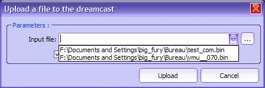
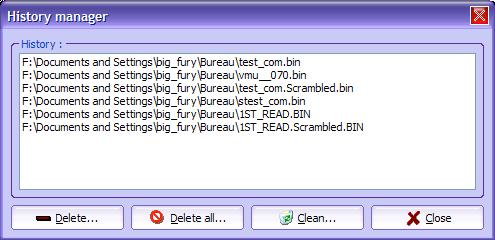
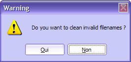
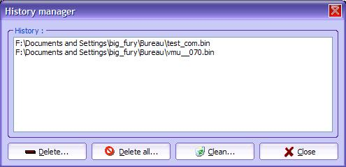

| 16. Historique |
Ce chapitre traite de la gestion de l'historique.
1) Description
C'est quoi l'historique? C'est la barre permettant de sélectionner un fichier que vous avez déjà envoyé/reçu. C'est pratique si vous travaillez sur un projet et que vous devez re-uploader plusieurs fois un fichier, par exemple. Merci JMD pour cette option. Voilà à quoi cela ressemble :

L'historique est la zone d'édition avec une flèche permettant
de re-sélectionner un fichier.
2) Utilisation
Comment ajouter un fichier ? Très simple. Vous devez l'envoyer comme d'habitude. Il se mettra automatiquement dans l'historique!
Plus tard, vous n'avez qu'a le re-sélectionner pour le relancer. Si bien sur, il existe encore...
Bien sur, vous pouvez re-executer sans passer par cela. Pour cela, consultez la Présentation du Debug log.
3) Gérer l'historique
Bon, vous avez des fichiers qui s'accumule dans l'historique, mais qui ne servent plus à rien. Comment faire pour les enlever ? C'est très simple : Rendez vous dans Config > Historique... . Vous verrez une boîte semblable à celle ci :

Une petite explication. Le bouton Effacer... permet d'enlever un élément sélectionné. Effacer tout... permet de tout remettre à zéro, soit vider la liste. Nettoyer... est interressant : Grâce à ce bouton, vous pouvez enlever les fichiers, et uniquement, les fichiers qui n'existe plus.
Note : Lorsque vous faites 'Effacer', cela agit uniquement sur la liste, et pas sur le fichier lui même !
Pour Effacer... et Effacer tout... il n'y a rien de plus à dire. En revanche, testons Nettoyer... . Lorsque vous cliquez sur le bouton, vous avez ensuite une question :

Voulez vous
nettoyer les nom de fichiers invalide ?
Répondez Oui pour valider,
ou Non pour Annuler. Si vous cliquez sur
Oui, vous allez avoir une boîte
réduite avec les fichiers nettoyés !

Chez moi j'avais VMU Tool (vmu__070.bin) et Link Test (test_com.bin) que j'ai créé pour DC-TOOL GUI sur mon bureau.
Bien! Maintenant vous savez vous servir de l'historique! J'espère qu'il vous plaira.